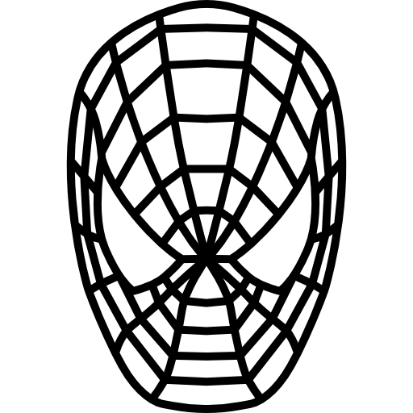

«Мстители» (англ. Avengers) — элитная команда супергероев.
Она была создана писателем Стэном Ли и художником Джеком Кирби.
— У меня есть армия.
— А у нас Халк!
— А у нас Халк!
- Николас Фьюри (Ник) - Директор «Щ.И.Т.а». (до фильма Первый мститель: Другая война). Появляется в сериале "Агенты Щ.И.Т" в начале первого сезона отчитывая Колсона за поломку новенького самолета и в конце первого сезона чтобы помочь команде победить Гаретта. Передает пост директора «Щ.И.Т.а.» Колсону. великолепный тактик, мастер боевых искусств, стрелок и атлет
-
 Тони Старк (Железный человек) - Энтони Эдвард Старк, супергерой, гений, миллиардер, плэйбой, филантроп, спасающий мир в своем летающем костюме.
Тони Старк (Железный человек) - Энтони Эдвард Старк, супергерой, гений, миллиардер, плэйбой, филантроп, спасающий мир в своем летающем костюме.
- Брюс Беннер (Халк) - Супергерой, который получился из доктора физики после того, как рядом с ним взорвалась созданная им же гамма-бомба. После облучения получил способность превращаться в агрессивного, неистового монстра с зеленой кожей
-
 Наташа Романофф (Черная Вдова) - Агент "Щ.И.Т.", родилась в Сталинграде и долгое время была тайным агентом КГБ. У нее прекрасная физическая форма и боевые навыки, но она пользуется и научно-техническими разработками русских ученых
Наташа Романофф (Черная Вдова) - Агент "Щ.И.Т.", родилась в Сталинграде и долгое время была тайным агентом КГБ. У нее прекрасная физическая форма и боевые навыки, но она пользуется и научно-техническими разработками русских ученых
-  Питер Паркер (Человек-паук) - Питер был укушен радиоактивным пауком в средней школе и укус паука заставил его развивать способности похожие на паучьи. Вскоре он был в состоянии ползать по стенам и чувствовать опасность, и, в конце концов, создал оружие, которое стреляет паутиной. После смерти дяди Бена, Питер решил, что «с большой силой, приходит большая ответственность», таким образом, он стал Человеком-пауком. Обычно он живёт со своей тетей Мэй в Квинсе и влюблен в Мэри Джейн Уотсон.
-
 Скотт Лэнг (Человек-муравей) - Второй супергерой, носивший имя Человек-муравей. Он стал заниматься кражами со взломом, когда понял, что его работы в качестве эксперта по электронике не хватает, чтобы содержать его семью. Был арестован, отбывал тюремный срок и был условно освобождён за хорошее поведение после трёх лет.
Скотт Лэнг (Человек-муравей) - Второй супергерой, носивший имя Человек-муравей. Он стал заниматься кражами со взломом, когда понял, что его работы в качестве эксперта по электронике не хватает, чтобы содержать его семью. Был арестован, отбывал тюремный срок и был условно освобождён за хорошее поведение после трёх лет.
- Стивен Роджерс (Капитан Америка) - Стивен или Стив Роджерс, супергерой, в которого с помощью опытной сыворотки был превращен болезненный юноша. Вынослив, силен, его тело вырабатывает сыворотку "суперсолдата" не прекращая
-
 Тор Одинсон - Асгардский бог грома, чьи собственные силы еще и дополнены и усилены при помощи молота Мьёльнира
Тор Одинсон - Асгардский бог грома, чьи собственные силы еще и дополнены и усилены при помощи молота Мьёльнира
- Стивен Стрэндж (Доктор Стрэндж) - Бывший нейрохирург Стрэндж является Верховным магом Земли, основным защитником планеты от мистических угроз.